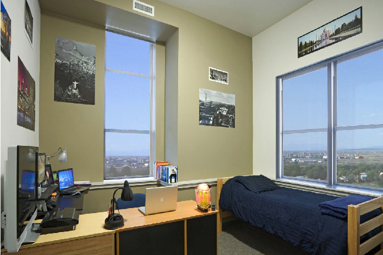

All incoming international students are advised to visit the CSU ISSS Website to learn more. The Fort Collins International Center is also very helpful to international students and consists of community volunteers from Fort Collins.
GROOME transportation offers great pricing and deals for transportation to and from CSU. CSU Student discount code ‘CSU’ may work. CSU ISSS Transportation has many other updated resources that you can check out. It is advisable to book a Green Ride that drops you off at the doorstep of your residential address instead of the CSU Transit Center(situated on campus) as transporting your luggage from the CSU Transit Center to your residential address may become a hassle due to odd hours of arrival.
CSU Housing resources: CSU ISSS Housing, CSU Apartment Life, CSU Off-Campus Life.
Many students live in places like Rams Crossings East, Prospect Plaza, Northfield Condominiums, 720, 1118, 1120, 1220 City Park Ave, Mosher Manor, etc. Zillow and Hotpads are good ways to start searching for permanent accommodation apart from asking in the CSU ISA Facebook group.
Temporary Housing is often provided by ISA on a case by case basis to incoming students up to 5 nights until they’re able to move in permanent housing. Please email isa.colostate@gmail.com if you have any more questions or enquiries.